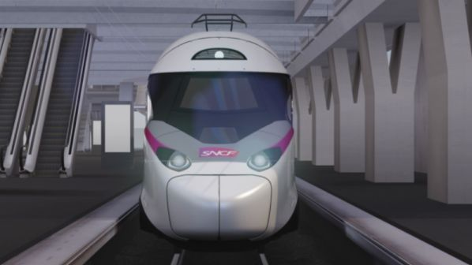
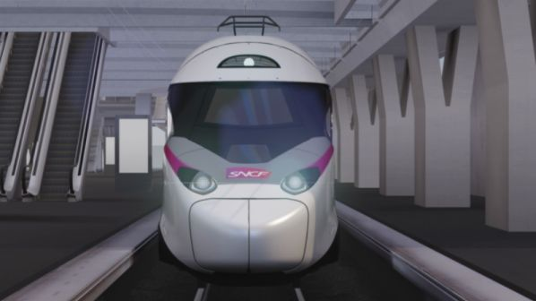

Alstom Avelia Horizon
Съвременен високоскоростен влак, съчетаващ ефективност, комфорт и устойчивост.
 


Преглед
Alstom Avelia Horizon е проектиран да бъде един от най-ефективните високоскоростни влакове в света, с акцент върху комфорта и устойчивостта. Влакът комбинира иновации в дизайна и технологиите, за да предложи оптимално пътуване с минимално въздействие върху околната среда.
Основни характеристики
- Скорост: Максимална скорост от 350 км/ч
- Енергийна ефективност: С 20% по-нисък разход на енергия спрямо предишни модели
- Устойчивост: Изработен с материали с нисък въглероден отпечатък и възможност за рециклиране
- Комфорт: Просторен интериор, ергономични седалки и съвременни удобства
Технология
Alstom Avelia Horizon е оборудван с напреднали системи за сигурност и контрол, включително автоматични спирачки и стабилизиращи системи. Влакът разполага с аеродинамичен дизайн и леки материали, които допринасят за по-ниска консумация на енергия.
Услуги на борда
Влакът предлага разнообразни удобства като Wi-Fi, зарядни портове, обширни отделения за багаж и услуги на борда, които включват закуски и напитки. Пътниците могат да избират между различни класи за пътуване, осигуряващи комфорт на високо ниво.
Спецификации
| Скорост | 350 км/ч |
|---|---|
| Дължина | 200 метра |
| Капацитет | 750 пасажери |
| Оператор | SNCF |